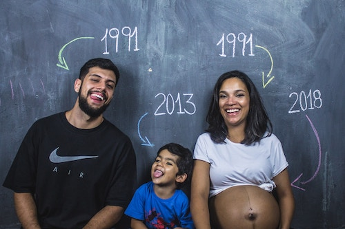
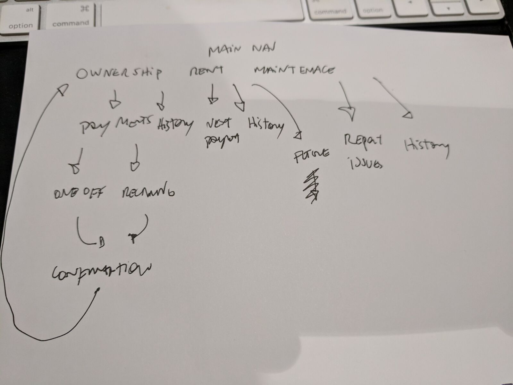
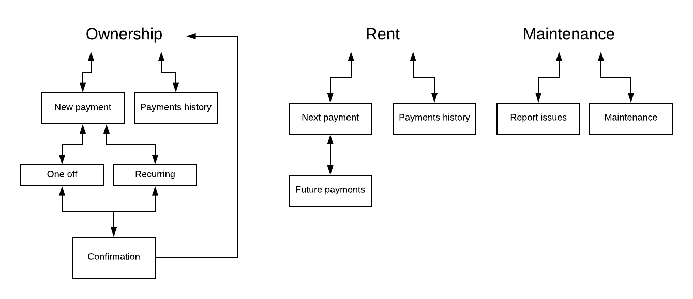
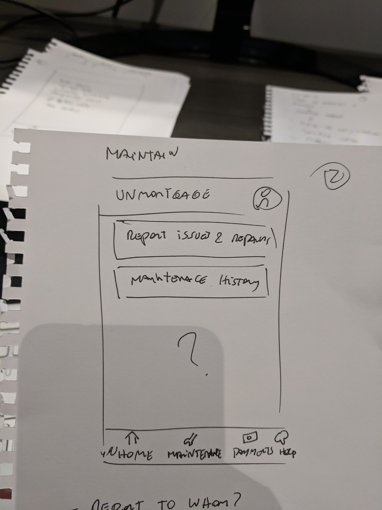
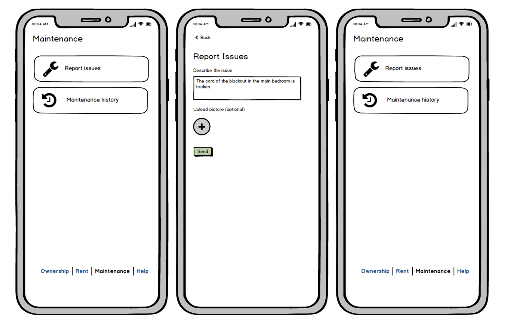
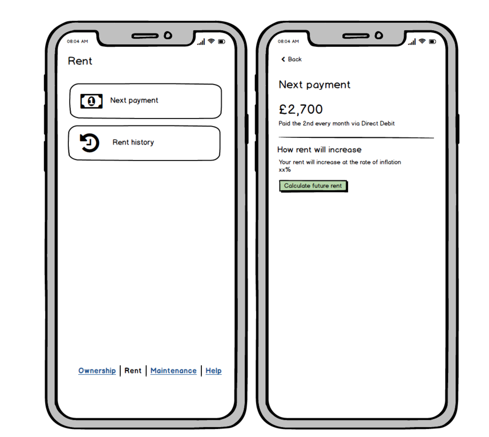
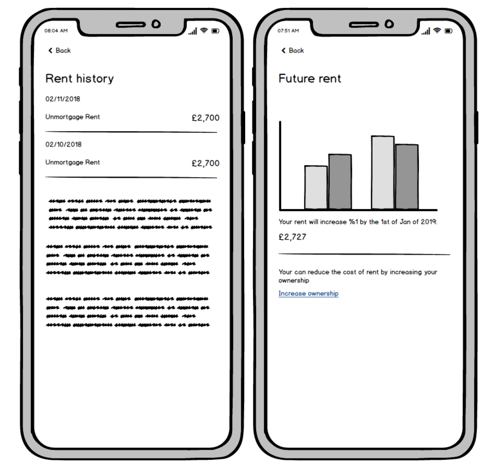
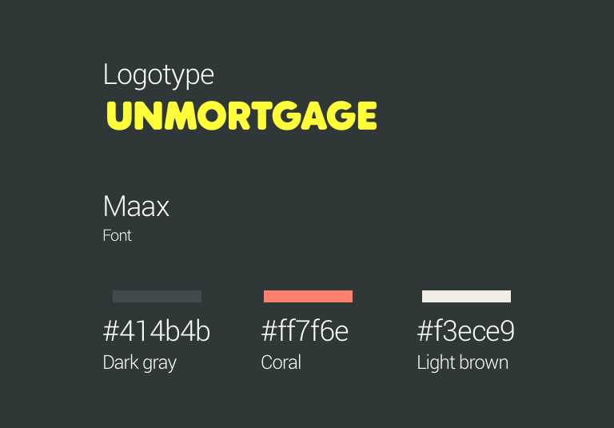
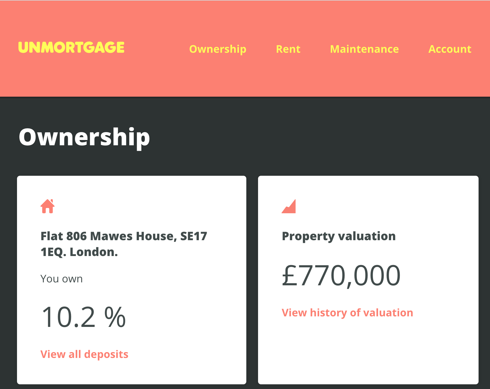

Unmortgage
2018, London.
Free debt ownership
The requirements
You are an owner-tenant and your needs are: Maintain the property, as and when something happens
- Report maintenance issues and minor repairs
- See major events and maintenance history
- How to display my next payment due and previous payments
- When will my rent increase and by how much (yearly at the rate of inflation)
- The current ownership level (Starts with a minimum of 5%)
- Property valuation (4 times a year) and its history
- If I want to make one-off staircasing payment or arrange regular staircasing payment
What it does
Tools used Pen paper, Invision (interactive prototype), Balsamiq (low res prototype), Lucidchart (user flows), Html, Atomic design (UI)
Define a proto-persona
I have to make certain assumptions because I don’t have enough data from customers yet.  Martha & Robert and Mikey
- Professionals. 38/39 years old.
- Can afford rent, could afford a mortgage, but they don’t trust banks and don’t like long term debts.
- Afraid of future and Brexit. Want to leave something to their son, but properties are unaffordable in London. Renting since 2014.
- They have seen housing markets collapse around the world several times, people losing their homes and jobs.
- Always on the run, busy.
- Hyperconnected, their life is digital, banking, communications, work. They love digital because it save time and simplify their already busy life. Technology is a tool to make their life easier.
Basic architecture and user flows
Based on the information provided. Tried a few things: In the beginning I grouped the main tasks as Activity / Payments / Maintenance because both rent and ownership have a “Payment” component after further consideration I ended grouping main tasks as Rent / Ownership / Maintenance. This prevents confusion around what I am paying (ownership or rent?). I believe it aligns better with the company message. It could be validated with a simple card sorting exercise if necessary.  
Maintain the property, as and when something happens
I assumed, because I owned just a little portion, that Unmortgage was going to pay the cost, find a repair service and that’s why they need me to report it.
ActorMartha & Robert
ScenarioThe chain of the blackout is broken and needs replacement. It’s not easy to change so we have to call a service to repair it.
Basic flowCreate a report > Confirmation of reception from Unmortgage > Repair or issue is shown in history marked as OPEN or IN PROGRESS > Service comes and repairs > Repair is shown as COMPLETED.
When I build UI I always try to think how it is going to be coded. An easy way to do this is using atomic design (atoms, molecules, templates , pages). Is a good way to think a bit like a developer and create modularised components that can be re-used, I also consider different states (empty, loading, error, full, partial, I tend to start with a full or partial first). I follow good design principles, common patterns, platform guidelines and usability principles.  Pay rent
ActorMartha & Robert
ScenarioEnd of the month, Lorena changed her job recently. Salary still not deposited and they want to know how much and when the rent is due.
Basic flowRent> Next payment > See amount and date
A calculation of how rent will be reduced in case of increasing ownership could be shown also in the future rent section
Also a graphic could be shown to represent the evolution of your rent in time or just simply show the future value predictions
 A prototype
Showing reporting, maintenance and ownership Clickable prototype
Visual design
Mini style guide based on brand guidelines

Higher fidelity
And example of how ownership section could look in the browser
Higher fidelity 